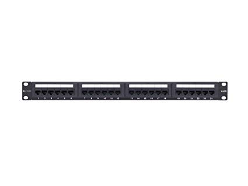
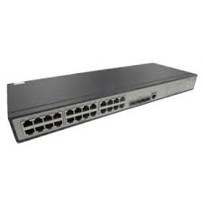
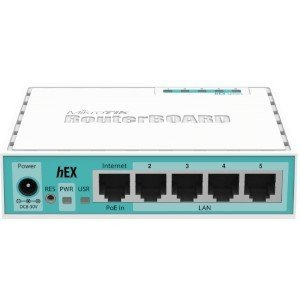

Αναφορά τεκμηρίωσης εργαστηρίου K7-005
Αποθετήριο| Oνοματεπώνυμο: | Αθηνά Μπελλου |
|---|---|
| ΑΜ: | 17121 |
| Ημερομηνία ολοκληρωσης: | |
| Τερματικό: | LISPC018 |
| Διεύθυνση MAC: | 00-1F-D0-5B-10-87 |
| Εσωτερική IP: | 192.168.88.18 |
Υπολογιστικός Εξοπλισμός
Το εργαστήριο Κ7.005 διαθέτει:
- 25 τερματικά φοιτητών
- 1 τερματικό εισηγητή
- 1 βιντεοπροβολέα
- 1 διαδραστικό πίνακα.
Δικτυακή Υποδομή
Στο εργαστήριο υπάρχει δομημένη καλωδίωση που καλύπτει τα τερματικά των χρηστών και τη θέση εργασίας του εισηγητή. Στο εργαστήριο υπάρχει καμπίνα (rack) μέσα στην οποία καταλήγουνοι καλωδιώσεις (patch panel) οι οποίες με τη σειρά τους συνδέονται στον ενεργό εξοπλισμό (switch/router).
Η διάταξη των τερματικών απεικονίζεται στο Διάγραμμα 1

Διαδικασία τεκμηρίωσης
Η διαδικασία που ακολουθήθηκε για την καταγραφή του εξοπλισμού και υποδομής του εργαστηρίου είναι η εξής:
| Βήμα | Περιγραφή Εργασίας | Παρατηρήσεις |
|---|---|---|
| 1. | Για όλα τα τερματικά (Η/Υ) που συμμετέχουν στο δίκτυο χρησιμοποιήθηκε μοναδικός κωδικός, ο οποίος αποτελεί την ταυτότητα (όνομα) του τερματικού (στήλη Β) | Η ταυτότητα του κάθε τερματικού βρισκόταν καταγεγραμμένη πάνω στην κεντρική μονάδα κάθε υπολογιστικού συστήματος |
| 2. | Για κάθε τερματικό εντοπίστηκε η κοντινότερη πρίζα δικτύου η οποία συνήθως αποτελεί το σημείο σύνδεσης του τερματικού με το δίκτυο. | Έγινε έλεγχος όλων των πριζών κοντά στα τερματικά. Για τις πρίζες που δεν είχαν όνομα, δώσαμε εμείς ένα καινουργιο. |
| 3. | Εντοπίστηκε για κάθε τερματικό η αντίστοιχη πρίζα σύνδεσης (στήλη F) | Εντοπίσαμε σε ποιο τερματικό οδηγεί η κάθε πρίζα. |
| 4. | Έλεγχος τερματικών που δεν συνδέονται σε πρίζα δικτύου (στήλη H ή Ι) | Τα τερματικά 17, 19 και 20 εντοπίστηκε ότι συνδέονται με το router ενώ το 18 με την πόρτα switch 24. |
| 5. | Έλεγχος αντιστοίχισης πριζών με θέσεις κατανεμητή (patch panel) (στήλη G) | Για την αντιστοίχιση πριζών με θέσεις patch panel αποσυνδέσαμε κάθε θέση patch panel και καταγράψαμε ποιο τερματικό έχανε την σύνδεση με το διαδίκτυο. |
| 6. | Εντοπισμός της κεντρικής πρίζας του εργαστηρίου από την οποία το δίκτυο αποκτά πρόσβαση στο διαδίκτυο | Το δίκτυο αποκτά πρόσβαση στο διαδίκτυο από την κεντρική πρίζα 5ΒΑ-03. |
| 7. | Καταγραφή της αντιστοιχίας των θέσεων του κατανεμητή (patch panel) με τις θέσεις του μεταγωγέα (switch) (στήλη H). | Οι θέσεις του κατανεμητή αντιστοιχούν στις θέσεις του μεταγωγέα εκτός από τα τερματικά 17, 18, 19 και 20. |
Εξοπλισμός καμπίνας (Rack)
Στο επόμενο διάγραμμα απεικονίζεται η διάταξη του εξοπλισμού στην καμπίνα (rack).

Περισσότερα στοιχεία για τον εξοπλισμό μπορείτε να βρείτε στις σελίδες των κατασκευαστών όπως στον παρακάτω πίνακα:
| Συσκευή | Φωτογραφία | PATCH PANEL 24 PORT CAT 5Ehref=http://www.jjnetwork.net/product/amppatch-panel-24-port-cat-5e-original |  |
|---|---|
| 3COM 3CRBSG2893 2928-SFP Plus Baseline Ethernet Switch http://www.arp.com/medias/13433767.pdf |  |
| Mikrotik heX lite (RB750r2)https://mikrotik.com/product/RB750r2 |  |
Το αποτέλεσμα της καταγραφής σχετικά με τις συνδέσεις του εξοπλισμού της καμπίνας απεικονίζεται σχηματικά παρακάτω:

Από το παραπάνω διάγραμμα διαπιστώνουμε:
- Η κεντρική πρίζα συνδέεται με την 1η θύρα (port) του δρομολογητή
- Η 2η πόρτα του δρομολογητή διασυνδέεται με τη 2η πόρτα του μεταγωγέα, «μεταφέροντας» την πρόσβαση στο διαδίκτυο σε όλες τις θύρες του μεταγωγέα.
- Οι πόρτες 3,4,5 του δρομολογητή χρησιμοποιούνται απευθείας από τερματικά (Η/Υ)
- Οι πόρτα 24 του μεταγωγέα χρησιμοποιείται απευθείας από τερματικό (Η/Υ)
Διευθυνσιοδότηση (IP Addressing)
Το λογικό διάγραμμα του εσωτερικού δικτύου του εργαστηρίου Κ7.005 απεικονίζεται παρακάτω, όπου διαπιστώνουμε πως:
- Η εξωτερική διεύθυνση του εργαστηρίου όπως αυτή αποδίδεται από το ΚΔΔ για τη κεντρική πρίζα είναι 195.130.101.55
- Η εσωτερικές διευθύνσεις διαθέσιμες για τα τερματικά του εργαστηρίου είναι στο εύρος 192.168.88.0/24

Το αποτέλεσμα της παραπάνω διαδικασίας έχει καταγραφεί συνεργατικά από τις ομάδες του εργαστηρίου σε ένα διαμοιρασμένο αρχείο Excel